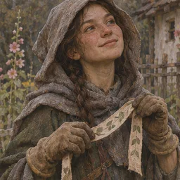
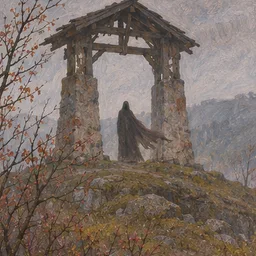

Вечер 1
Незнакомая знакомая
Защитить право Орсы говорить за себя, устроить безопасный круг и выбрать способ начать охоту.
Открыть сценарий →В Лощине Тихой Меди колокола не дают именам пропасть из чужой памяти. После глухой грозы под вечерним звоном поселилась чужая тень: она зовёт знакомыми голосами и меняет повадки, когда ей отвечают. Жителям и гостям долины предстоит выследить её, защитить соседей и решить, можно ли жить рядом с тем, кто научился голодать по человеческим именам.

Перед чтением вступления сверьте место героев, присутствующих людей и предметы с итогом прошлого вечера. Если условия встречи отпали, сыграйте последствия там, где находится партия. Событие по расписанию может произойти за кадром. Герои узнают о нём от тех, кто был на месте.
Попросите показать, кто уже вышел за огни и какие знаки узнавания действуют. Группа может провести ночь вместе с ними. Утром сначала назовите тех, кто вернулся к своим, а вопрос о тени оставьте открытым.
Не пойдём с зовущими. Останемся у дверей тех, кто не хочет откликаться. Ставим у двери немой знак для желающих войти. На этом крыльце вслед никого не назвали. Вдали продолжает звонить колокол, и о судьбе чужих домов у нас нет вестей.
Сравним звон без обращения с правилом детской игры. Попробуем оба случая на пустом крыльце без имени человека. Доступные свидетельства — Колокол без обращения, Дощечка игры «Не зови вслед». Ответ даёт тени голос. Свободным последним ударом можно направить Гостя к выбранному эху. Просим двух пастухов повторить опыт с эхом. Жители сами ставят опыт и выбирают способ звать близких. Гостю не обещают имя в обмен на помощь.
Тень заняла дорожку у ручья, позднего прохожего отрезало от нас. Зажигаем фонари по берегам и ждём ответа добровольца. Ставим фонари с двух берегов и ждём добровольного ответа. Слышим один голос и отвечаем только ему; переход у сада ещё закрыт.
8 сессий по 150 минут: 15 минут на согласование границ и вступление/повтор, сцены 35 + 40 + 35 минут, перерыв 10 минут, завершение 15 минут. Необязательное столкновение заменяет препятствие средней сцены. Подготовленные герои — уровень 3. Прочитайте первую сессию, выберите состав и передайте игрокам отдельную страницу героев.
В мастерской создайте или откройте свой черновик, выберите импорт пакета и укажите package.json либо нужный файл из variants. Проверьте сценарий и состав в предпросмотре; активацию подтверждает ведущий. Сюжетные развилки, часы давления и жанровые действия разрешаются ведущим — они не становятся автоматически сыгранными событиями.
Пакеты разных размеров используют первые N героев в порядке карточек. Дополнительные герои дают новые роли, но не обязательные ключи к истории. Выбор произвольного состава требует правки черновика и повторной проверки.
Народный ужас, преследование среди знакомых мест, странные голоса и товарищеская смелость. Никакой охоты на детей: тревога направлена на тайну и выбор, а тепло возникает из поступков людей, помогающих друг другу без владения чужим именем.
Защитить право Орсы говорить за себя, устроить безопасный круг и выбрать способ начать охоту.
Открыть сценарий →Проследить полный цикл Гостя на местности и решить, что допустимо использовать приманкой.
Открыть сценарий →Получить независимую проверку повадок, испытать безымянную приманку и решить судьбу рабочего места Весны.
Открыть сценарий →Узнать полный охотничий порядок через живую традицию, проверить водную границу и отделить возможное перемирие от доверия на слово.
Открыть сценарий →Применить изученные повадки для защиты живой общины и увидеть разницу между спасением людей и спасением всего имущества.
Открыть сценарий →Выбрать рабочий способ закончить охоту, испытать его и подготовить запасной выход без обязательной жертвы.
Открыть сценарий →Довести предметную приманку до выбранного места, проверить реальную реакцию Гостя и сохранить право изменить финальный план.
Открыть сценарий →Совершить выбранный финальный поступок, принять его реальные последствия и дать каждому герою личный эпилог.
Открыть сценарий →
Высокая женщина с медной заколкой и поясом звонарных инструментов.
Следит за звонницей и учит различать узлы на верёвках ладонью.
Удержать огни вокруг домов и не отдать страху право решать, кого считать своим.
Она прервала осенний последний звон, когда услышала ответ своим голосом с пустого крыльца. Это был испуг перед неизвестным, а не попытка скрыть договор или навязать кому-то плату.
Не знает всех состояний Гостя, не читает мысли тени и не знает, какой будущий замысел сработает.
По просьбе воспроизводит последовательность на незвучащей верёвке и рассказывает об испуге. Не требует обещания вернуть старый обычай.

Плащ с белой штопкой, трость с неглубокими зарубками и два фонарных крючка на поясе.
Бывший ночной обходчик, знающий места, где тень деревьев перекрывает тропу.
Передать опыт так, чтобы молодые не повторяли его привычку доказывать смелость одиночеством.
В первую ночь после грозы он ответил своему голосу из сада и бросил любимый плащ, чтобы уйти. Плащ остался в саду; Лавр стыдится своего бегства, хотя оно спасло его.
Его рассказ ограничен пережитой ночью: он не видел, что было после ухода, и не знает условий ловушки или перемирия.
Рассказывает маршрут при вопросе о безопасном отходе. Не просит вернуть плащ ценой риска и соглашается, что отступление тоже было решением.

Короткая накидка в пятнах глины, тяжёлые сапоги и пояс с деревянными мерками.
Сушит чашки на верхнем настиле мельницы и разрешает пользоваться сухим навесом.
Проверить повадки странного эха и сохранить рабочее место без риска для людей.
Она замечала крошечную тень в пустом колоколе и уже поставила несколько опытов с выдуманными обращениями. Человеческие имена в опыт не вводила; не знает, можно ли доверять говорящей тени.
Знает результаты малого опыта, а не гарантии большой ловушки; не знает тайных планов других людей.
Даёт приборы и журнал по просьбе поставить опыт. Для доступа достаточно договориться о сухой площадке, свидетелях и пустых знаках.

Шерстяной жилет, хозяйственная доска и слишком короткий карандаш за ухом.
Считает запас муки и добровольцев для общих работ.
Уберечь припасы и людей, хотя ему трудно согласиться оставить вещь, которую можно ещё спасти.
Он намерен сам вынести мешки с дальней сушилки, если их не успеют забрать. Это ещё не совершённое действие; при ясном плане охотно принимает помощь и безопасный отказ.
Не знает намерений Гостя и не может обязать других рисковать. Его хозяйственный прогноз не является автоматическим таймером.
Открыто показывает запасы и маршруты, когда герои предлагают план защиты. Признаёт свой замысел после вопроса, за чем ему труднее всего не вернуться.

Плащ с узором из тёмных ромбов, резной знак ветви и плоская фляга на ремне.
Знает пастбищные тропы и приносит воду по общей очереди.
Вернуть обычную жизнь и самостоятельно решить, участвовать ли в охоте или поддерживать безопасное укрытие.
Она помнит себя полностью, хотя некоторые соседи перестали её узнавать; не хочет, чтобы её превращали в живую приманку или символ чужой доблести.
Не знает, кто ещё отвечал тени, и не обещает прощения от лица всех затронутых жителей.
Передаёт правила игры, если спросить о следе или защите. Её собственная история доступна только по её желанию; правила можно прочитать на общей игровой дощечке.

Садовые рукавицы, серый капюшон и лента с нарисованными листьями вместо делений.
Поддерживает старые ветви и записывает местные приметы.
Чтобы её наблюдения проверяли наравне со взрослыми, не назначая ей опасную работу ради доказательства взрослости.
Она нашла способ наблюдать тень из освещённого сада через отражение в жестяной миске. Никого не посылала к тени и не желает участвовать в живой приманке.
Отделяет наблюдение от догадки о голоде; не знает, сдержит ли Гость обещание.
Показывает точки наблюдения и рисунки по просьбе. Не требует соглашаться с её объяснением, а предлагает повторить безопасную проверку.

Кожаный фартук, повязка на волосах и круглая медная пуговица вместо застёжки.
Чинит хозяйственные инструменты и объясняет устройство вещей простыми словами.
Дать охотникам понятный инструмент и безопасный способ отступить, а не чудесное оружие с неизвестной ценой.
Он сохранил тяжёлый глухой колпак, хотя собирался отдать его на переплавку. Колпак можно использовать для удержания эха, но это оставит мастерскую без медного запаса на сезон.
Не знает всех повадок тени до сообщения группы, не гарантирует надёжности ловушки без испытания.
Показывает колпак и пустой колокол после вопроса об оснастке. Сначала предлагает испытать всё на пустой ткани и звуке.

Светлый плащ с широкими рукавами, узловой счётчик воды и оббитый медью шест.
Следит за бродом и перевозит грузы при высокой воде.
Чтобы у любого смелого плана был путь домой для самого медленного участника.
Она оставила в освещённом укрытии одеяла и муку на случай, если придётся переждать охоту вдали от домов. Подготовка не означает, что она уже решила уйти.
Не знает будущей воды и не гарантирует проход без осмотра. Не может согласиться на риск за других.
Показывает путь, запасное укрытие и площадку по прямому вопросу. Не требует сначала выбрать изгнание.

Издалека под пустой звонницей различима вытянутая фигура; край её плаща движется отдельно от ветра.
В старых местных рассказах у последнего осеннего звона есть слушатель, которому не называют человеческих имён.
Утолить голод по отзвукам и избежать тесного глухого пространства.
Гость обнаружил вкус живых обращений и пока не соблюдает старое ограничение огней. Он способен вернуть удержанный знак и принять безымянную пищу, но согласие и последующее соблюдение зависят от разговора и проверяемых действий.
Не читает мысли, не знает истинных имён без сообщения и не предсказывает успех. Говорит только в состоянии Чужого голоса; в других оставляет жесты и следы, не ведёт всезнающий монолог.
Если группа безопасно предлагает пустой звон и задаёт вопрос, отвечает о голоде в доступном состоянии. Достоверность проверяется возвратом знака и уважением к отказу, не удачным броском доверия.
Долина между вересковыми грядами; медные прожилки зеленеют в камне, а вечерний туман лежит ниже окон.
Колодец, общий хлебный стол и доска очередей стоят под навесом из тёмной дранки. На столе разложены деревянные знаки жителей.
Низкая звонница с просторным крыльцом. На каждой верёвке свои узлы, различимые ладонью даже в темноте.
Неподвижное колесо погружено в чёрный пруд. К сухому верхнему настилу ведут широкие мостки с верёвочными перилами.
Ветви старых груш поддерживают тканевые ленты. Между деревьями достаточно места для небольшого собрания.
Каменный очаг, сухие полки и крючья для плащей. Путники оставляют здесь по полену и собственный знак на дощечке.
Плоские камни отражают небо. Выше брода натянут поручень, рядом привязана широкая грузовая лодка.
Неглубокая выработка с кузнечным навесом и рядами негодных колокольцев. По краям тропы стоят заметные ограждения.
Открытая башня на невысоком гребне. Под её крышей висит неподвижный колокол, а на площадке видны гнёзда для дорожных фонарей.
Необитаемая теснина за пастбищем. Речка огибает каменный карман, где шаги долго отдаются эхом; на верхнем берегу проходит ограждённая тропа.
Условия: Если группа испытала безымянную приманку, подготовила колпак и сменных добровольных смотрителей, затем заманила Стаю и закрыла колпак, не оставив человека внутри.
Гость может быть удержан. Украденные знаки возвращают людям, а узнавание восстанавливают встречами, не одним магическим приказом. Участники решают, кто будет следить за колпаком и где его безопасно хранить.
Цена: Часть меди и сухой мельничный навес уходят под изолированное хранилище; смотрителям нужна смена. Необслуживаемая ловушка остаётся будущим риском, а не вечной гарантией.
Условия: Если Гость по собственной воле вернул удержанный знак, выдержал пробный отказ человека и принял конечную порцию только безымянного звона за огнями. Жители, участвующие в кормлении, согласны лично.
Возможно ограниченное перемирие. Гость сохраняет место в долине, но не получает права звать жителей чужими голосами; нарушение прекращает кормление и открывает подготовленный запасной план.
Цена: Потребуются регулярные наблюдения и взрослые добровольцы, готовые отпускать звон. Пострадавшие не обязаны приближаться, прощать тень или участвовать в этом выборе.
Условия: Если испытан путь безымянной приманки в Каменную Глотку, проверена водяная граница и группа закрывает обратный проход после отхода людей.
Гость может оказаться изолирован в необитаемой теснине, где естественное эхо заменяет ему человеческие голоса. Долина остаётся без прежнего собирателя блуждающих отзвуков.
Цена: Дальнюю тропу и часть пастбища придётся закрыть; без присмотра за дикими эхами иногда снова расплываются надписи. Сезонный обход выполняют сообща, никого не изгоняя вместе с тенью.
Условия: Если окончательный замысел сорвался или группа отложила решение, но вывела людей за огни и восстановила взаимные знаки.
История может завершиться сохранённой общиной и честным обещанием продолжить охоту. Гость остаётся угрозой за защитной границей; это открытый финал, а не обязательная гибель или потеря личности.
Цена: Дальние работы откладываются, имущество приходится оставить, взрослые жители распределяют дежурства. У героев остаётся право передать охоту другим.
Авторская подготовка и техническая проверка не заменяют живую игру. Длительность, сложность и эмоциональное восприятие пока не проверены группой. Картину первой встречи можно открыть отдельно. Тактические схемы построены из данных встреч. Полный каталог содержит материалы ведущего — публиковать его целиком для игроков нельзя.